The Game
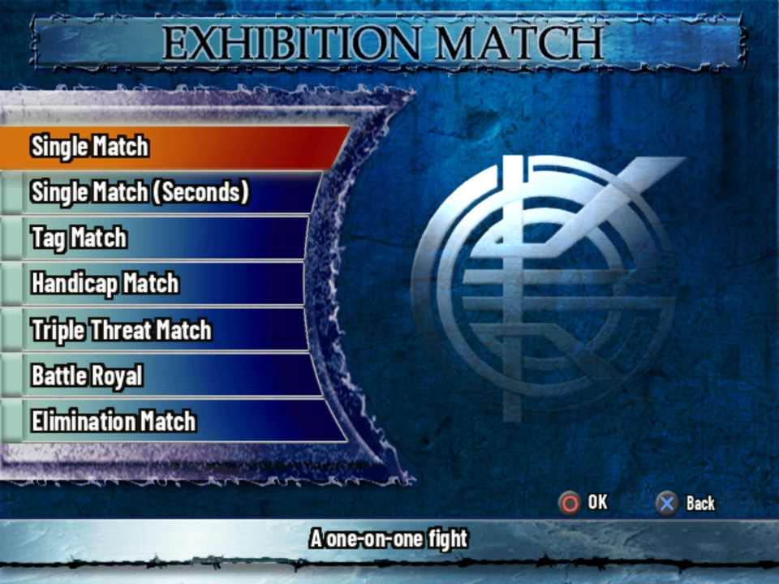
King of Colosseum II (キング オブ コロシアムII, Kingu obu Koroshiamu Tsū) is a pro wrestling game for the PlayStation 2, released in Japan in 2004 and never outside it. Its roster is the real Japanese scene of the time: New Japan, NOAH, All Japan, ZERO-ONE and WJ, plus freelancers and shoot fighters.
It plays differently from most wrestling games, so the parts worth reading first are Controls and How a Match Works:
- No life bar. Stamina, Spirit and Breath are hidden; you read them from how the wrestlers move. More
- Clutches and timing. Grapples start with a clutch (a hold), and you pick the move at the moment the wrestler sinks his hips. Miss it and he reverses. More
- Soul. Each wrestler can use his strongest moves only a few times a match. More
- Booking and building. Match Maker puts you in charge of a promotion's shows. Edit Mode builds wrestlers down to how the CPU fights with them. Match Maker, Edit Mode
This guide is the overview. The details live on four reference pages built from the game's data:
Getting Started
- The patch. The translation is an xdelta patch for the Japanese disc (serial SLPM-65602). There are three patches: English, which unlocks as you play like the original; English (All Unlocked); and the Japanese game with everything unlocked. See the project's README.
- Memory card. The game saves to the card in slot 1 and needs 1,871 KB free. Without one it asks whether to start anyway, and you can play without saving. game text
- Menus. Circle OK, Cross Back. Triangle picks a random wrestler on the select screen and opens extra menus elsewhere. START means Done. The button hints at the bottom of each screen say what else works there. verified in game
- Start in the Dojo. Kotetsu Yamamoto's lessons teach every basic action with a live drill, and finishing them unlocks him as a wrestler and a referee (see Secrets).
- Then Survival Road. It's the only place to earn the souls that buy hidden wrestlers, rings and Edit samples in the Hall of Souls.
Modes
The main menu has nine entries. The help line each one shows is in the last column. game text
| Mode | Japanese | What it is |
|---|---|---|
| Exhibition Match | エキシビションマッチ | Choose any wrestlers and fight in all kinds of matches. |
| Survival Road | サバイバルロード | Fight your way to the top to win the "King of Colosseum". The only source of souls. |
| Match Maker | マッチメイカー | Make the cards for the shows of all kinds of promotions. |
| Title Match | タイトルマッチ | Fight with a title on the line. |
| Series Mode | シリーズモード | Fight in league and tournament formats. |
| Edit | エディット | Create your own original wrestlers and promotions. |
| Dojo | プロレス道場 | Learn the controls while you play. |
| Options | オプション | Game settings. |
| Save/Load | セーブ/ロード | Save or load game data. |
Exhibition Match
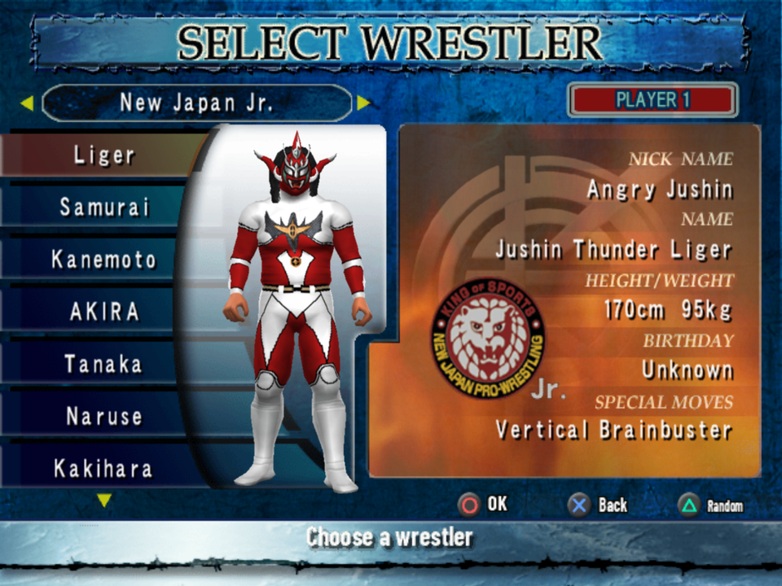
Seven match types game text:
| Match type | Wrestlers | Notes |
|---|---|---|
| Single Match | 1 v 1 | A one-on-one fight. |
| Single Match (Seconds) | 1 v 1 | With a second at ringside for each side. Seconds can interfere, and some skills only work as a Second. |
| Tag Match | 2 v 2 | See Tag matches. |
| Handicap Match | 1 v 2 | |
| Triple Threat Match | 3 | All at once. |
| Battle Royal | 4 | All at once, last one standing. |
| Elimination Match | 5 v 5 teams | Formats: Gauntlet Match (the winner stays in for the next opponent), Round Robin and Tug of War (Round Robin). Order the team 1st, 2nd, 3rd, 4th and Captain. There are 32 preset teams (Team New Japan, Makai Club, BURNING, ZERO-ONE Army ...), and Team Edit builds your own. Quick Save an edited team or it's lost. unverified which help line belongs to which round-robin format |
After choosing a wrestler you choose his Wrestler Type: each wrestler has up to four versions (costumes or eras). Then choose who controls each side (Player 1-4 or COM), and the rules on the CONFIGURATION screen. During a match START pauses: Return to Match, Camera Effects, Camera Mode, End Match, Exit Mode, and the commentary team. Afterwards: Rematch, Quit or Retry.
Survival Road
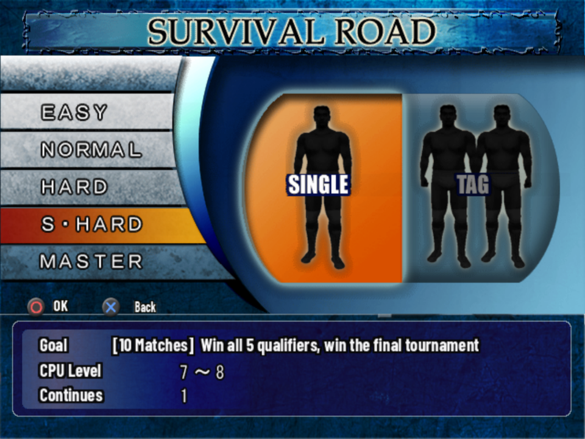
A run through qualifiers and a final tournament to win the King of Colosseum. Pick a course (New Japan, NOAH, All Japan, ZERO-ONE or WJ, and later the Fighters and Superstars courses), Single or Tag, a difficulty, and in singles whether to take a second. from the code
- Difficulties: Easy (3 qualifiers, no finals), Normal (7 matches, 3 continues), Hard (8 matches, 2 continues), Super Hard (10, 1 continue) and Master (10, no continues). Super Hard and Master are bought in the Hall of Souls. A continue replays the same match.
- Souls come after every match, won or lost. How many depends on the difficulty and the match rating, plus a bonus from your rank title (King of Kings down to Backyard Wrestler, judged on your last 10 ratings). The cap is 9,999.
- Clearing a course puts that course's hidden wrestlers on sale in the Hall of Souls, the shop on the Survival Road menu.
- Saving over a run erases the old one, but ratings, titles and souls carry over. game text
Every course's opponents: Survival Road Map. Every shop item: Secret Shop & Unlocks.
Match Maker
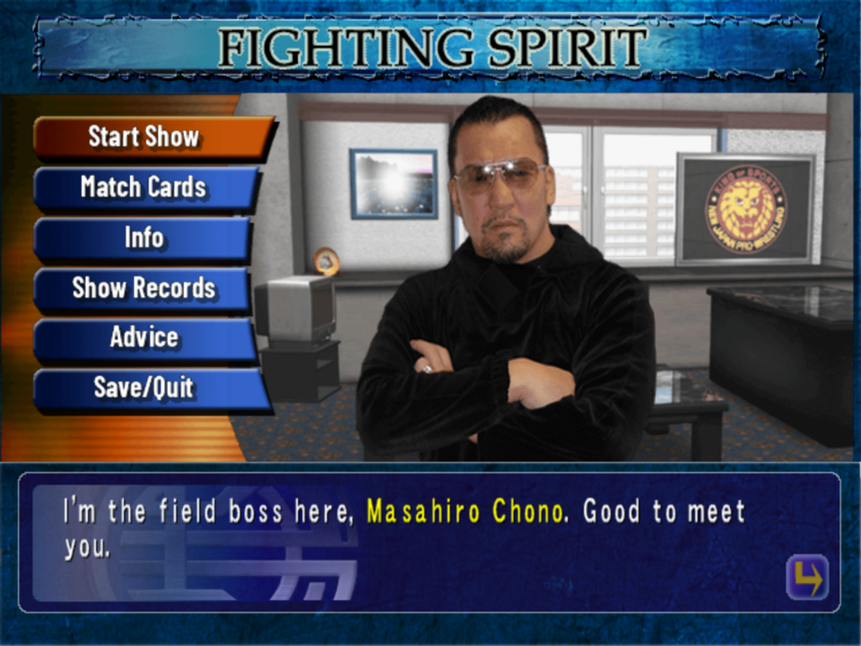
You book a run of shows for a promotion under its boss: New Japan (Masahiro Chono), NOAH (Mitsuharu Misawa), All Japan (Keiji Mutoh), ZERO-ONE (Shinya Hashimoto) or WJ (Katsuji Nagashima). from the code
- Each show has an attendance goal, a rating goal and booking rules: use every available wrestler, bouts 4 and 5 as tag matches, a title match, all matches under Muga Rules...
- You pass a show by reaching both goals. Miss one and it's Game Over for the campaign.
- The grade (S to E) only changes the boss's verdict and, with every earlier show at 85 or more, opens a bonus last show.
- Use Advice in the office before booking: the bosses say what this crowd wants.
- Clearing all five promotions opens Free Show, your own show with wrestlers from every promotion.
Every briefing, check and verdict: Match Maker Map.
Title Match
Choose a promotion and a belt, then Match, Title History (every champion, the date and the defenses) or Vacate Title. The belts: IWGP Heavyweight, NWF Heavyweight, IWGP Tag Team, IWGP Junior Heavyweight, IWGP Junior Tag Team, U-30 Openweight (New Japan); GHC Heavyweight, Tag Team, Junior Heavyweight and Junior Tag Team (NOAH); Triple Crown Heavyweight, World Tag Team, World Junior Heavyweight and All Asia Tag Team (All Japan); Tenkaichi Heavyweight, Tag Team and Jr. (ZERO-ONE); WMG Heavyweight and Tag Team (WJ). Some belts have conditions: the U-30 title needs two wrestlers aged 30 or under, junior belts need a wrestler in the weight class, and a champion can't be the challenger. game text
The game has a message "Title Match can now be chosen from the main menu", so it can start locked. What opens it hasn't been traced. unverified
Series Mode
Leagues and tournaments, singles or tag: G1 Climax, Best of the Super Juniors, Champion Carnival, the GHC leagues, Fire Festival, Real World Tag League and more, each also as a tournament, plus an Original one you name and set the rules for. game text
- League formats: Normal (most points wins), Playoff (top two meet in a final) and 2 Blocks (the block winners meet).
- Tournaments: 1-Day Tournament (Stamina and Spirit drop with each match) or Series Tournament (full recovery between matches), for 4, 8, 16 or 32 entries.
- Auto Mode lets the CPU play the matches. Standings and Quick Save are on the series menu.
- Wrestlers' mode special skills work here and in Title Match.
Dojo
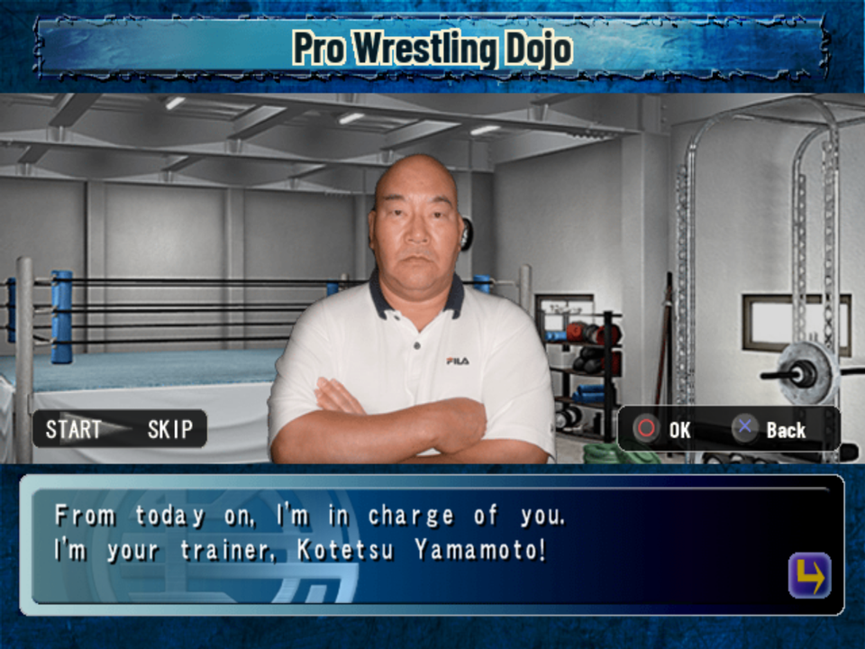
Twelve steps of lessons, 84 drills in all: Basic Actions, Standing Actions, Down Actions A and B, Top Rope Dives, Clutch Actions, Irish Whip Actions A and B, Ground Clutch Actions, Tag Actions, then the Test Match (beat Kotetsu by 3 count or submission; there are no time, ring-out or DQ finishes) and Sparring (a free match against a trainee). Each lesson shows its goal and the controls, and stamps DONE when you pass. START opens the practice settings: CPU state (Full, Normal, Dying), CPU control and level, and Change Drill. game text
The Controls section below follows the Dojo's lessons.
Controls
What follows is what the Dojo teaches game text, checked against the move slots in the wrestler data from the code. "Direction" is the D-pad (the game says 方向キー). Two buttons joined with + are pressed together. Every wrestler fills the same inputs with his own moves; the Wrestler Database lists them.
Markings: game text the game says so; from the code read in the game's data; verified in game seen in an emulator; unverified not yet checked.
Clutches (grapples) work on timing. After R1+Triangle the screen flashes as your wrestler sinks his hips: press the move button then. Early in the match only small moves land, so build up through small, mid and big. Why
Standing
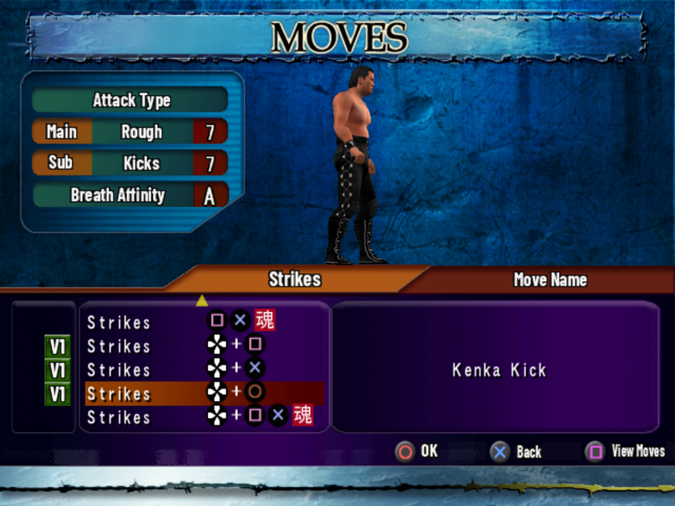
| Input | Action |
|---|---|
| Square Cross Circle | Standing strikes. Each move has its own range and effect. |
| Direction + Square Cross Circle | A second set of standing moves (mostly kicks). |
| Square+Cross | Soul move: stronger, and uses up one Soul. Direction + Square+Cross is a second one. |
| Triangle | Homing Dash: runs at the opponent by itself. |
| Direction + Triangle | Rope Dash: run where you steer, off the ropes. Harder to use, but more freedom. |
| dashing: Square Cross Circle Square+Cross | Dash moves. Triangle just before the rebound is a Rope Stop (mash it to stop more easily). |
| hold R2 | Guard, held before the hit lands. Guarding with ragged Breath can cause a Guard Crush, which leaves you wide open. |
| R2 / Direction + R2, timed | Catch: press it right as an attack is about to land to catch it and counter. Catching a kick leads to the leg-catch moves. |
| Right stick | Taunts: up, down, left, right. "Use them in the flow - the fans love it." Several skills work off taunts. |
| hold L1 | Recover Breath. |
Strikes lead into clutches and make good surprise attacks, but rely on them too much and the opponent reads you.
Clutches (grapples)
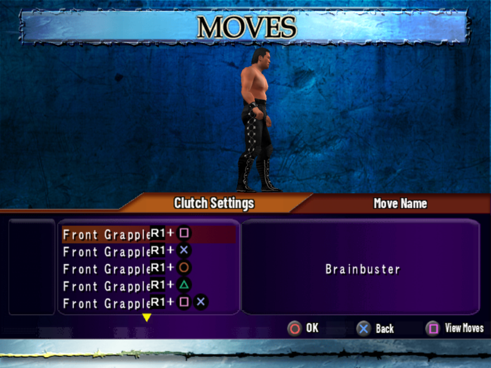
Get close and press R1+Triangle: from the front that's the Tie-Up Clutch, from behind the German Clutch. Every wrestler has these two. R1 with Square, Cross, Circle, Square+Cross or Triangle+Circle starts the wrestler's other clutches (a Brainbuster clutch, a head grab, a powerbomb clutch...), set in Edit Mode. from the code
In a clutch, press a button as the screen flashes:
| Input | Front clutch | Rear clutch (German Clutch) |
|---|---|---|
| Square Cross Circle Triangle | The clutch's moves, from small to big | The rear moves (mostly German suplex variants) |
| Square+Cross Triangle+Circle | Soul moves | Soul moves |
| R2 | Front Headlock (Tie-Up only): restrains him, then SquareCrossTriangleCircle attack and Direction hauls him | Full Nelson: holds him briefly, for a partner to hit (holds less on a fresh opponent) |
| R1 | A move slot, often a switch to another clutch from the code | Usually a switch to a Backdrop or German clutch from the code |
| Direction + tap R1 | Irish Whip (Tie-Up only); below |
How the plain R1 slot and the whip inputs are told apart in practice hasn't been checked. unverified Near a Dazed opponent, R3 spins him to face you or face away.
Irish Whip and corners
| Input | Action |
|---|---|
| Tie-Up: Direction (to the ropes) + tap R1 | Irish Whip. Counters, avalanche moves and more all start here. |
| as he comes back: R1 + Square/Cross/Circle/Square+Cross | Counter Moves (back elbows, shoulder throws...) |
| Tie-Up: Direction (to a corner) + tap R1 | Diagonal Irish Whip: he's stuck in the corner for a while; how long depends on his Stamina. |
| he's in the corner: Square Cross Circle Square+Cross | Diagonal Dash from across the ring, or the corner down moves when you're close and he's slumped. |
| in the corner: R1 + Square/Cross/Circle/Square+Cross | Corner Grapples: the avalanche moves, "the most dangerous moves in wrestling". |
| in the corner: R1+Triangle | Tree of Woe: hangs him upside down, helpless for a while. Useful in tag matches. |
| Tie-Up: hold R1 | Irish Whip (Outside): throws him out of the ring, helpless for a while (your back to the ropes). |
| Tie-Up: Direction (behind you) + R1 | Throws him onto the apron. |
Opponent down
The moves depend on where you stand (head, arm side or legs) and on whether he's face-up or face-down. Pins, chokes, locks and strikes are all down moves.
| Input | Action |
|---|---|
| Square Cross Circle Square+Cross | Down moves for that side. Dashing first gives the down dash moves (stomps, elbow drops). |
| Cross during your own hold | Release a pin, choke or lock at any time, "handy to win with your finisher". |
| arm side: R1+Triangle | Turn Over (face-up ↔ face-down). |
| head or feet: Triangle | Dragging: pull him to where your moves land, away from the ropes for example. |
| arm side: Triangle / hold Direction | Pulling Sideways (to line him up for a dive) / Step Over. |
| head or feet: hold R1+Triangle | Pick-up to his feet. It can leave him Dazed, longer the more damage he has. |
| tap R1+Triangle | Pick-up to a half position: Sitting (at the head, face-up), Kneeling (at the feet, face-up; for Shining Wizard-type moves) or All Fours (face-down). Each has its own moves on Square Cross Circle Square+Cross. |
| R1 + Square/Cross/Circle/Square+Cross/Triangle+Circle | Clutch Pick-up: haul him straight up into a clutch. Not taught in the Dojo. from the code |
Top rope dives
Climb the post first (face it, Direction + Triangle; hold to run up it; Down climbs off). Choose the dive by his state: down dives (body press, elbow drop) on a downed opponent, standing dives (sledgehammer, missile kick) on a Dazed one.
- Down dive (front): Circle or Square+Cross. Standing dive: Square or Cross.
- Down dive (back), a moonsault for example: he must lie face-up, straight out from the post. Hold Direction toward the post + Square/Cross/Circle/Square+Cross. Drag him or pull him sideways to line him up; a little off still lands.
- Not every wrestler climbs: fighters who aren't pure pros, MMA types especially, stay off the posts (Post Climbing "Can't Climb").
Ground clutches
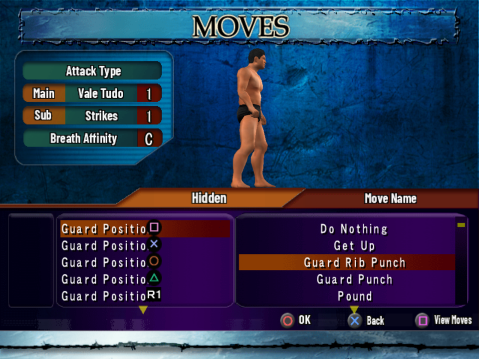
The mat game. Get in with a Running Tackle (Homing Dash, then Square), or from some clutches and catches. When he tackles you, R2 in time crushes it into a Facelock. There are four positions, Guard, Mount, Facelock and Back Mount. In each, the same flash timing as a clutch picks an attack, a break or a change of position, and losing the timing battle gives him a reversal.
In the data from the code: in each position Square is usually "Get Up" (break off), Cross Circle Triangle strikes or submissions, R1 a change of position (Guard Pass, Mount to Back Mount ...), and Square+Cross Triangle+Circle Soul moves. Underneath, the Ground Clutch Reversal moves break the clutch, sweep, pull guard or take the back.
On the receiving end
| Input | Action |
|---|---|
| mash Square Cross Circle Triangle | Kick out of a pin before 3, or escape a choke or lock before you give up. |
| mashing + hold Direction to the ropes | Crawl to a Rope Break (if the rules allow it). |
| down: hold Square + Direction | Rolling; at the edge, a Rolling Escape out of the ring. Only for a short time. |
| down: hold Square | Play Possum: stay down. |
| down: hold Cross | Getting-Up Feint: a short invincible feint as you rise. |
| R2, timed | Catch a strike (see Standing); against a tackle, the Facelock. |
| in a German Clutch: Square Cross Circle | German Clutch Reversal moves. from the code unverified exact timing |
| L1+L2+R1+R2 for 2 seconds | Give up yourself, in a choke or lock. Options has a "Give Up Button" setting ("Allow giving up in a match with a button press"); whether it has to be on is unverified. |
Ring, apron and posts
| Input | Movement |
|---|---|
| at the apron edge: hold Direction + Triangle | Leave the ring |
| at the apron edge: tap Direction + Triangle | Step out onto the apron |
| outside, at the ring: hold Direction + Triangle | Enter the ring |
| on the apron: Direction + Triangle | Drop to the floor, or climb the post |
| Rope Dash, hold R1 | Dash In / Dash Out: fast re-entry, or chase him outside |
| facing a post: Direction + Triangle (hold: run up) | Climb the post; Down climbs off |
| Input | Outside the ring |
|---|---|
| at the apron edge facing him: Direction + Square/Cross/Circle/Square+Cross | Plancha over the ropes |
| Rope Dash, during the rebound hold a button | Tope through the ropes |
| on the apron: Rope Dash, then a button | Apron Dash onto him outside (needs room) |
| on the apron, he's inside and Dazed: Cross/Circle/Square+Cross | Springboard back in |
| inside, he's on the apron: R1+Triangle, then a button | Over-Rope Grapples (the reverse from the apron: Apron Grapples) |
Tag matches
| Input | Action |
|---|---|
| Direction (to your partner) + L1 | Tag, when you're the legal man inside and he waits on the apron. |
| on the apron: Triangle / L1 | Beckon & Tag: call your CPU partner over / Tag (Forced) when he's close. |
| near your trapped partner: Square Cross Circle (or dashing) | Cut Attack: break up the hold. |
| L2 | Switch Target. |
| 2 on 1, both at his front or back: Square | Double Team. Whip him into your own corner with your partner on the apron and press Square+Cross for the corner double team. |
| from the floor: Direction (to him) + R1+Triangle | Pull Down a wrestler from the ring or apron, or Trip him as he rebounds off the ropes (Rope Stop timing). "Mostly my job as a second." (Hoshino) |
| he's up on the post: Direction (to the post) + Square/Cross/Circle | Deadly Drive: slam him back into the ring. |
The Full Nelson and the Tree of Woe are the Dojo's tools for splitting the other team.
Weapons
Kantaro Hoshino's lessons: hug the barrier outside and press Direction + R1 to get a weapon. Near a weapon, R1 picks it up and R1 again drops it. Square Cross Circle swing it light (fast, weak), mid and heavy (slow, strong), also while dashing. A weapon locks out some of your moves, and a hit makes the holder drop it. R2, timed as his weapon is about to hit, catches it and it's yours. Which weapons exist, and whether they draw a foul, isn't in the game's text. unverified
How a Match Works
No life bar
"None of these stats are shown on screen, so read them from how the wrestler moves." (Kotetsu Yamamoto) game text
| Stat | What it does | Watch for |
|---|---|---|
| Stamina 体力 | Low Stamina makes you easier to pin, and many skills switch on at "plenty of" or "nearly gone". | Slow, heavy movement; longer stays in the corner after a whip. |
| Spirit 精神力 | Low Spirit also makes the 3 count easier, and it changes how long you stay down. | |
| Breath 呼吸 | Running and moves use it up. With ragged Breath your fighting pose drops and guarding risks a Guard Crush. Run out and you're Breathless, unable to move. Hold L1 to recover. | The fighting pose dropping. |
| Durability 耐久度 | Neck, arm, waist and leg each have their own. A worn-down part makes you give up sooner. | Work one part with your locks unverified that each lock targets a part |
Heavy damage leaves a wrestler Dazed (seeing stars) for longer; a Pick-up can daze him too. Standing dives and the Springboard work best on a Dazed opponent. Wrestlers bleed, with their own recovery, breathing and spirit ratings while bleeding, and several skills key off blood. What starts the bleeding isn't stated. unverified
What is on screen: the wrestlers' names, the remaining Soul and the clock (Options can turn each off), and the Crowd Satisfaction rating after the match.
Soul
Soul moves (魂技) are each wrestler's strongest moves, on the two-button inputs Square+Cross and Triangle+Circle. Every use spends one Soul, and uses are limited, so check the Soul count on screen. A wrestler without Soul moves equipped for a situation can't use one there. game text
- Each wrestler has 3 or 4 Soul Buttons in his skills from the code, almost certainly his Soul stock per match unverified.
- Most Finishers sit on Soul inputs (of 441 wrestler versions, 379 have the finisher on a Soul input), so a finisher usually costs a Soul. from the code
- Souls move during a match only through skills: Lights Out takes one with your first Soul move, Dictator steals one when you're hit while taunting, Blood Pact and Soul Cheer restore one. See Special Skills.
Timing and reversals
- In a clutch, press the move button as the screen flashes and the wrestler sinks his hips. Lose that timing battle and he hits a clutch reversal. game text
- Early in the match mid and big moves rarely land, and auto reversals kick in. Build from small to mid to big. game text
- Each wrestler has two Reversals types in his profile (odds and moves), drawn from the fight styles. They probably set how often he reverses automatically and with what. unverified
- Muga Rules give more reversals and stronger joint locks and roll-ups. game text
Winning
Under Pro Wrestling Rules you win by 3 count, submission or KO. The result banners are 3 COUNT, KO, GIVE UP and TKO. Count-out, DQ, decisions, points and time-limit draws depend on the rules.
- Pins work better the lower his Stamina, Spirit and Breath. Submissions work better the lower the durability of the body part. game text
- You can let go of your own hold with Cross: release a weakened opponent to finish him with your finisher instead.
- Criticals (クリティカル) are a special event the match rating counts. The rules set how often they happen (High, Normal, Off), each wrestler has a critical type (most have Finisher), and skills change the critical rate of Soul moves. What a critical does exactly hasn't been traced; it may be the sudden KO or TKO finish. unverified
- The match rating (crowd satisfaction, and Survival Road's S-D grade) counts finishers, signature moves, Soul moves, taunts, criticals, near falls (2.9 counts), blood, outside moves, double teams, interference, a post-match brawl and more, against one-sided matches and long stretches with no hits. game text How they add up hasn't been traced.
Tips
- Start small: light strikes and small clutch moves first. Big moves early get reversed.
- Manage your Breath. Don't dash all match; step back and hold L1 when your pose drops.
- Position him first. Drag or pull him sideways before a moonsault, and away from the ropes before a submission.
- Save your Soul for the finish. Most finishers need one.
- Taunt between big moves: the crowd rating counts taunts, and several skills work off them.
- For Match Maker and Survival Road ratings, vary the match: near falls, a dive outside, signature moves, then the finisher. A short, one-sided match rates badly. unverified as a rule; it follows the items the rating counts
- If the timing feels hard, lower the CPU Level in the rules, or practise in the Dojo with the CPU set to Dying.
Rules and Settings
The CONFIGURATION screen sets the match rules: the settings, their values and the help lines below are the game's own. game text Which settings a rule set uses, and where the screen is reached from in each mode, hasn't been mapped. unverified
Rule sets
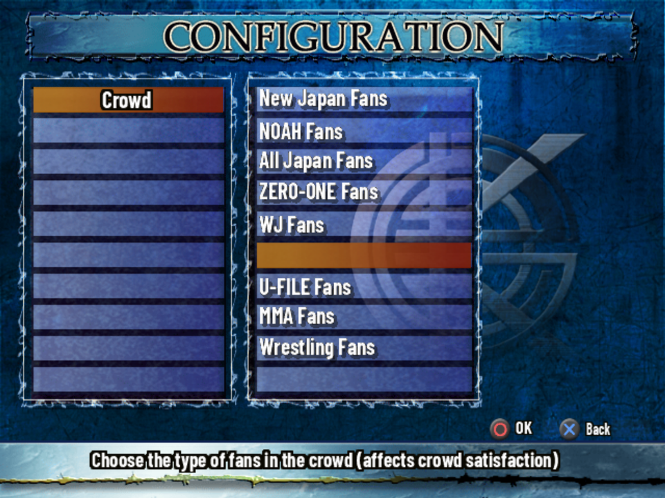
| Rules | Japanese | Help line |
|---|---|---|
| Pro Wrestling Rules | プロレスルール | Win by 3 count, submission or KO. |
| Vale Tudo Rules | バーリトゥードルール | Win by submission, KO or when the stamina runs out. |
| Ultimate Crush Rules | ＵＬＴＩＭＡＴＥ ＣＲＵＳＨルール | The ultimate vale tudo rules: no draws. |
| U Rules | Ｕルール | Win by submission, KO or when the points run out. |
| American Rules | アメリカンルール | A fantasy rule that powers up signature and finishing moves. |
| Muga Rules | 無我ルール | More reversals, stronger joint locks and roll-ups. |
| Free | フリー | Set the rules freely. |
A hidden eighth set, Pancrase Rules, is in Secrets.
Every setting
| Setting | Help line | Values |
|---|---|---|
| Rules | Set the match rules | the rule sets above |
| Match Type | Set how the match is decided | 3 Count, Submission Only |
| Time Limit | Set the time limit | 10, 15, 20, 30, 45, 60 min, Unlimited |
| Falls | Set the number of falls | One Fall, Best of 3 Falls |
| Rounds / Round Time / No. of Rounds | Rounds on or off, their length and number | On, Off / 3, 5, 10, 15, 20 min / 1-15 (some never shown) or Unlimited |
| Points / No. of Points | Points on or off; how many each wrestler has | On, Off / 5, 10, 15 |
| Down Points / Escape Points | Points lost for being knocked down / for a rope escape | 1-5 |
| Judge | Set the decision when time runs out | On (Normal), On (Must System), Off |
| CPU Level | Set the CPU strength | 1-8 |
| Game Speed | Set how fast time passes in a match | 100%, 200%, 300%, 400% |
| Ring | Choose the ring for the match | Plain (Blue, White, Black), New Japan 1-3, New Japan (VT), NOAH, All Japan, ZERO-ONE, WJ, U-FILE, and 13 more from the Hall of Souls |
| Crowd | Choose the type of fans in the crowd (affects crowd satisfaction) | New Japan, NOAH, All Japan, ZERO-ONE, WJ, U-FILE, MMA or Wrestling Fans |
| Venue / Ramp | The venue; whether there's an entrance ramp | Spike Dome, Nippon Butokan, Oedo Kokugikan, Rinkai Colosseum, Yurakuen Hall, Meifa Ariake, Sendagaya Gymnasium, Kawashima Stadium, Regional Venue / On, Off |
| Down Count | Choose whether a downed wrestler is counted | On, Off |
| Rope Break | Choose whether rope breaks are allowed | On, Off |
| Lumberjack | Keep the wrestlers from leaving the ring | On, Off |
| Ring-out Count | Choose whether a wrestler outside the ring is counted | 20, 10, Off |
| Foul Count | Choose whether a wrestler on the corner post is counted | On, Off |
| Critical Rate | Set how often criticals happen | High, Normal, Off |
| Referee | Choose the referee | Red Shoes Unno, Masao Tayama, Shuichi Nishinaga, Mighty Inoue, Kyohei Wada, Shinsuke Abe, Tiger Hattori, Norio Honaga (and Kotetsu Yamamoto, from the Dojo) |
| Ring Announcer / Caller / Color | The ring announcer, play-by-play and color commentary | Hidekazu Tanaka, Ryu Nakata, Fumihito Kihara, Okky Okita / Yoshinari Tsuji, Off / Kazuo Yamazaki, Mitsuo Momota, Off |
| Intros | Choose whether to watch or skip entrances | On, Off |
| Skip CPU Matches | Play CPU vs. CPU matches at high speed | On, Off |
"On (Must System)" is presumably the 10-point must system of judging, from the Japanese マストシステム. unverified The crowd matters in Match Maker: each promotion's fans like different things, and the bosses' advice says what.
Edit Mode
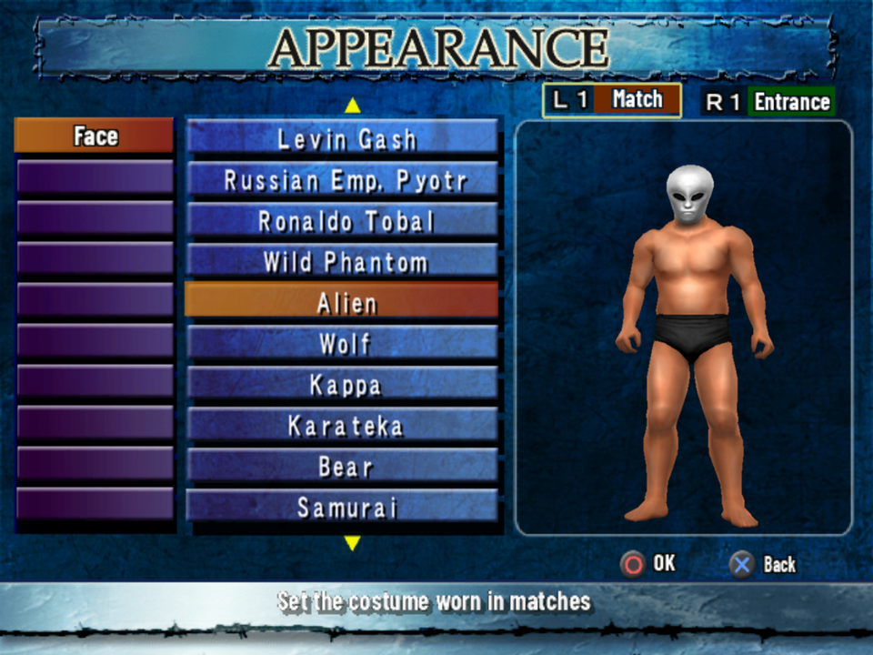
Edit builds a wrestler completely: look, moves, skills, parameters and how the CPU fights with him. The top menu:
- Original Wrestler Edit: create new wrestlers. There are 100 slots, each with up to four Wrestler Types (versions). from the code
- Default Wrestler Edit: change the built-in wrestlers. Restore Data puts the original back.
- Promotion Edit (20 new promotions, with a name and a logo), Transfers, Rename and Reorder.
A wrestler's pages:
| Page | What's on it |
|---|---|
| Choose Model | The model wrestler to start from. |
| Profile | Promotion, name, nickname, weight class (Junior Heavyweight, Heavyweight, Super Heavyweight, Openweight), nationality, build (SS-LL), height and weight, birthday, fight style, Reversals (Odds) and (Moves), two voices, favorite color, popularity. |
| Appearance | L1 the costume worn in matches and R1 the one for entrances: face, body, each part of the gear, colours, and for the entrance the gear, intro speech, theme song (240), entrance and name calls. |
| Skills | Soul Buttons (3 or 4), critical type, recovery, breathing and spirit (each also while bleeding), neck/arm/waist/leg durability (down to "Injured"), move speed, post climbing, one mode skill and three match skills. |
| Parameters | Eleven offense values (Strikes, Kicks, Throws, Joint Locks, Chokes, Power, Agility, Strength, Technique, Rough, Vale Tudo) and eleven defense values (the same, with Aerial, Slams and Lariat in place of Power, Agility and Strength), each 1-10. from the code |
| Moveset | 285 move slots in 25 categories (strikes, dashes, counters, corner, clutch settings and clutch moves, down moves by position, dives, over-rope and apron grapples, Hidden Moves for the ground game, catches, double teams, taunts, intros). Icons mark the F finisher, S1-S4 signature moves and V1-V2 voice slots. from the code |
| CPU Logic | For each situation (opponent far away, locked up, down face-up, outside, tag partner in trouble ...), the odds of each action at Low, Mid, High and Dying opponent damage. Auto Logic fills it in for you. |
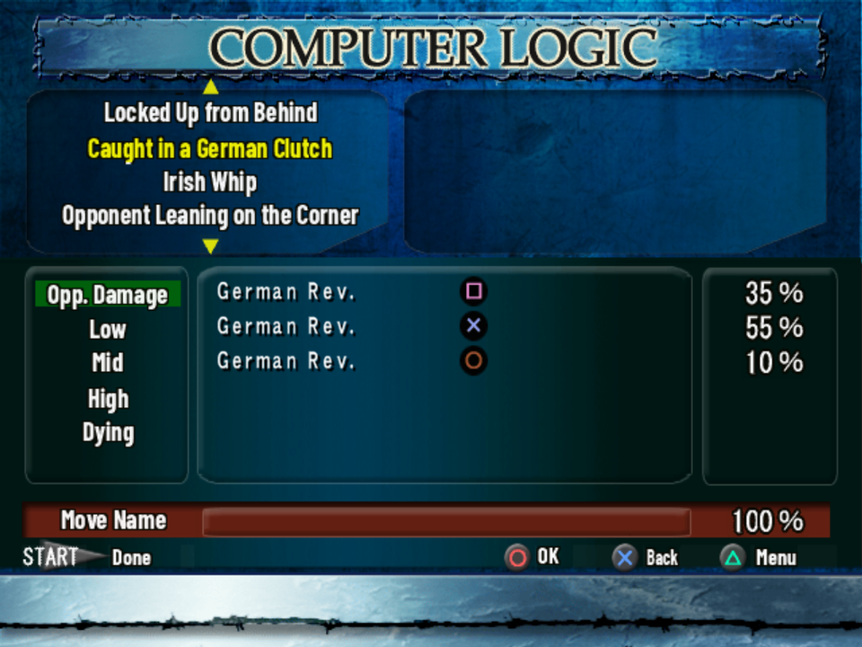
- Load Sample (Triangle on a page) loads a template into that page: 26 fight-style templates (Orthodox, Technician, Power, Luchador, Heel, Shooter ...), or a complete sample wrestler or fighter. Most samples are bought in the Hall of Souls. Load the same sample on every page for the complete wrestler. Samples arrive "already complete and free to change".
- Copy takes any of the six pages from another wrestler. Promotion and weight class aren't copied. game text
- Edit Points: 200 for a new original wrestler, up to 400 with the four "Edit Points +50" items. What they're spent on hasn't been traced. unverified
- Changing a champion's weight class or birthday, retiring him or overwriting him vacates his belts and takes him out of series and Elimination teams. A renamed wrestler loses his Battle History. game text
- Names: the name entry keeps the game's Japanese keyboards. English names go in with the ABC grid.
- Quick Save often. Edits live in the Edit data until you save to the memory card.
Options and Saving
Game Settings
- Vibration
- Save Prompt: ask before saving changed game data
- Clock and Wrestler Info (names and Soul) in matches
- Crowd Satisfaction after matches
- Give Up Button: allow giving up with a button press
- 3D Model Type: the proportions of the 3D models
Sound Settings and Battle History
- Sound Type (Stereo, Mono), Entrance Theme (Broadcast or Live), sound effect and music volume, SFX Test and Music Test
- Battle History: each wrestler's record: matches by type, league and tournament wins, titles won
- There's no difficulty or camera option: CPU strength is the rules' CPU Level, and the camera is on the pause menu.
The Music Test's track title flickers, showing only its first letters. The original Japanese game does the same. verified in game
Saving
- Save/Load on the main menu: Load, Save and Copy Wrestler, each for All Data, System Data or Edit Data. System data holds the unlocks, the Hall of Souls, Survival Road records and souls, and the options and rules. from the code
- The game also saves by itself after changes, unless the card was swapped.
- Copy Wrestler loads edited wrestlers from another memory card (put it in slot 1), one at a time.
- Series Mode, Elimination teams, Survival Road and Match Maker keep their progress with their own Quick Save or Save/Quit.
- Saves from the Japanese game work with the translation: the patch doesn't change the save format. The save's title on the card stays Japanese (キングオブコロシアム２).
Special Skills
Each wrestler has up to three match special skills and one mode special skill, set on the Skills page in Edit Mode. The effects below are the game's own descriptions. game text Every wrestler's skills are in the Wrestler Database.
Match skills
Combination skills
A combination skill counts as all of its parts at once.
Mode skills
Only in Series Mode and Title Match.
Secrets
Unlockables and hidden content. Everything bought with souls, with its price and condition, is on Secret Shop & Unlocks. The technical side is in HIDDEN_CONTENT.md.
The Hall of Souls
The shop on the Survival Road menu ("Trade souls for secrets") sells 30 hidden wrestlers and versions, 117 Edit samples, 13 rings, Edit Points, the Super Hard and Master difficulties and two extra courses, for 10-500 souls. An item goes on sale once you've cleared the course it asks for, mostly on Normal or harder. With the King of Kings rank title everything is half price. from the code
Spoiler: what clearing each course puts on sale
Clearing a promotion's course on Normal or harder puts its legends and alternate versions on sale. Some of them:
- New Japan (10): Tatsumi Fujinami, Seiji Sakaguchi, S.S. Machine, Black Cat, Chono Summer Man ...
- NOAH (7): Misawa Super Gen., Kobashi Chosedai, Rusher Kimura, Mighty Inoue ...
- All Japan (6): Great Muta (500 souls, the most expensive), Kokushi Muso, Mutoh NBM ...
- ZERO-ONE (2): Hashif Khan and SHOGUN.
- WJ (5): Choshu Revolution, Masa Saito, Power Warrior ...
The full list with prices: Secret Shop & Unlocks. from the code
Kotetsu Yamamoto
Spoiler: the Dojo's reward
Beat Kotetsu in the Dojo's Test Match to unlock him as a wrestler (New Japan) and as a referee. from the code; fan sites agree. The Dojo route itself hasn't been played through with the translation. unverified
Free Show
Spoiler: Match Maker's reward
Clear the Match Maker campaigns of all five promotions to open Free Show: book your own shows with wrestlers from every promotion. from the code
Unlock everything
Spoiler: a name that unlocks everything
In Edit Mode, enter 小橋蝶野武藤橋本三沢 (Kobashi Chono Muto Hashimoto Misawa, in kanji) as a wrestler's name and confirm. It was tested in the given name field verified in game; Japanese fan sites type it as the nickname. It marks every Dojo lesson cleared, unlocks Kotetsu Yamamoto, buys every Hall of Souls item, turns on every ring, sets Edit Points to 400 and gives you 9,999 souls and the half-price title. Type it on the hiragana grid and convert each name to kanji.
What nothing unlocks
Spoiler: content the game never opens
Some content is in the game but never reachable, not even with the name above: a cut Pancrase promotion (its rules, ring, crowd, fighters' faces and a Match Maker campaign), the WAR ring, a referee, four Dojo trainees and a joke wrestler. The translation's All Unlocked patch opens them, and they work in game. verified in game Details: HIDDEN_CONTENT.md.
Japanese Glossary
Terms from the original Japanese game, and what the translation shows instead. The last column is checked against the translation each time this page is built.
Q&A
Is there an official English version?
No, the game was only released in Japan. This guide goes with the English fan translation, a patch for your own copy of the disc.
Where's the health bar?
There isn't one. Stamina, Spirit and Breath are hidden by design; watch the wrestlers' movement and pose. See No life bar.
Why does every big move get reversed?
Two reasons: the timing (press as the screen flashes) and the match stage (big moves early get reversed automatically). See Timing and reversals.
How do I do my finisher?
It's on one of the wrestler's move slots, usually a Soul input like Square+Cross or Triangle+Circle in a clutch, so it needs a Soul left. The Wrestler Database shows each finisher's exact input (marked F).
How do I get souls?
Only from Survival Road, after every match. Higher difficulties and better match ratings give more.
Can I just unlock everything?
Yes: the "All Unlocked" patch, or the name in Secrets.
Do my Japanese saves work?
Yes. With an All Unlocked patch, loading a save keeps everything unlocked, but Survival Road's souls and records are reset to the unlocked values at every load.
Why is some text still in Japanese?
The title logo, promotion and belt logos, costumes and ring art are artwork and stay as they are. So do the movies, the spoken commentary, the name-entry keyboards (English names use the ABC grid), the staff credits and the save's title on the card.
Credits and Legal
This guide is a non-commercial fan project, not affiliated with or endorsed by the game's developer or publisher. King of Colosseum II and its names and trademarks belong to their owners; the real wrestlers' and promotions' names belong to them.
The text is written in our own words from the game's own text (the Dojo lessons and the menus), its data and code as decoded by the English translation project, and these fan sources, which confirmed the unlock list and the name code: KAKUSI, uw.netlify.app and 日々を楽しむゲームブログ (sunouk). Bootflap's 2008 review describes the grapple system the same way. The guide contains no scans or images from any printed guidebook. The screenshots are from the English fan translation.
AI assisted with this guide.
The guide text is shared under Creative Commons Attribution-ShareAlike 4.0 (CC BY-SA 4.0; see LICENSE). You may share and adapt it as long as you credit this guide and share alike.
Corrections
Open an issue at github.com/kactusken/King-of-Colosseum-II-English, especially for anything marked unverified.